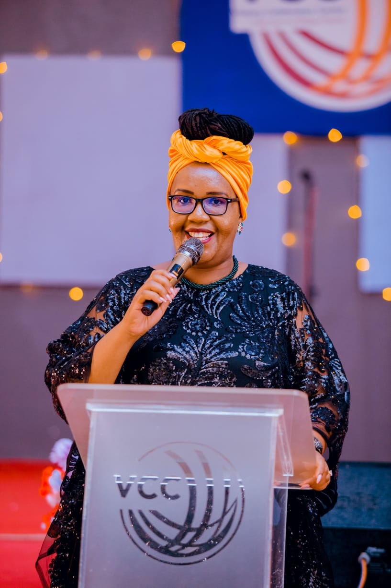

Leadership Team

Pastor Dr. Josephine Kihoza
International Coordinator (Tanzania)

Pastor Bridgit Ofomaja
Head of Mobilisation & Operations (Nigeria)

Apostle Dr. Eunice Thuku
Visionary & Founder (Kenya)
Arise, Take Your Place, Advance the Kingdom.
To raise a united, Spirit-filled movement of women across Africa who are equipped to fulfill God's end-time mandate...
King's Daughters Africa unites women ministers, ministers' wives, and women leaders for spiritual growth, leadership development, biblical training, mentorship, and strategic intercession...
International Coordinator (Tanzania)
Head of Mobilisation & Operations (Nigeria)

Visionary & Founder (Kenya)
A 10-week mentorship program designed to equip women ministers with biblical leadership, prayer, and discipleship skills.
Learn More"We are King's Daughters — Women Chosen By God For Such A Time As This."
Join Us